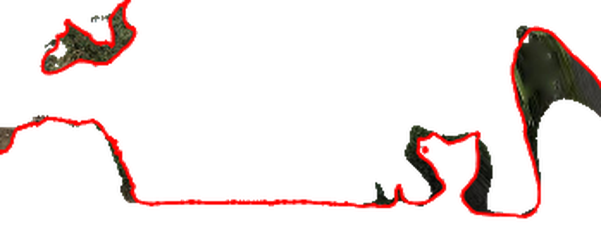

단면 목록 3새 단면
A–A′
B–B′
C–C′
두 번 누르면 이름을 고칩니다.
끌어서 순서를 바꾸면 도면 번호도 바뀝니다.
끌어서 순서를 바꾸면 도면 번호도 바뀝니다.
평면위에서
디테일 불러오는 중12 / 40
움직여도 됩니다 · 다 오면 사라집니다
10 m
N↑
A–A′ 단면북쪽을 봄
높이 EGM96 EPSG:5773 · 지정함
길이 38.00 m앞 0.00 / 뒤 5.00 m세로:가로 1:1화면 축척 1:40그리는 순서: 레벨선 → 영상 → 단면선

EL. 55.43 m
거리 27.80 m · 잎 메시